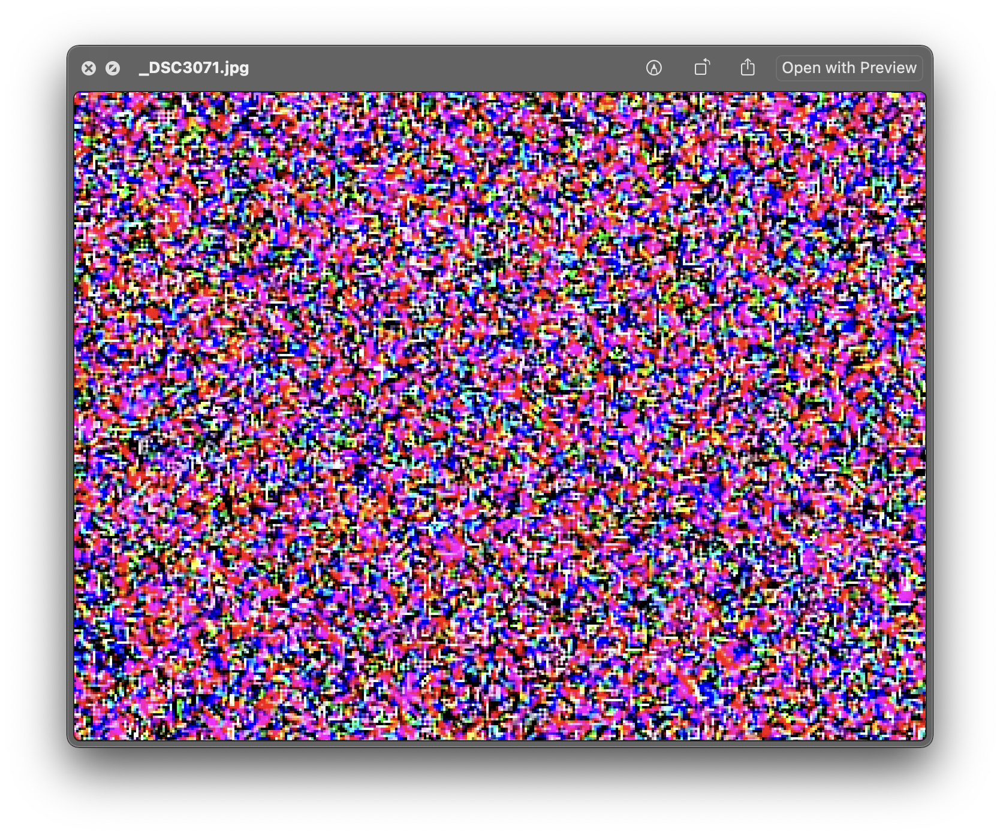
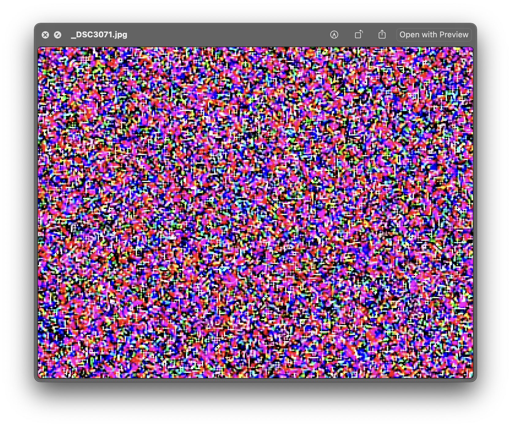

This photograph is called “_DSC3071.jpg”.
It was taken by Callum Beaney on 2018/06/16 at 21:58:41 using a Nikon D90-model digital single lens reflex camera, by means of a 2817.5 second exposure. The camera’s signal gain was set to ISO3200, and the lens was set to an aperture of f/5.6 at a 32mm focal length. The lens cap was left on. The camera was placed in a light-tight bag, which was then placed in a light-sealed room, where the shutter was activated in total darkness.
 Prior to the advent of digital imaging technology, photographs were made using Negative Film, which is constituted by a layer of silver halide crystals suspended in a layer of gelatin coated upon a transparent “film” base. During the film manufacturing process, tiny specks of silver sulfide are made to form on these silver halide crystals. When photons strike or “expose” a silver halide crystal during a photographic exposure, electrons are dislodged from the crystal, which then migrate onto those sulfide specks, or into cracks on the surface of the crystal itself. The charge these specks receive from those electrons then attracts free roaming silver ions, which together turn into metallic silver. These reactions collectively form a latent image. The film is then processed with chemicals to wash away unexposed silver halides, fixing the image on the film base.
Digital camera sensors measure the displacement of electrons by photons through a silicon layer. When struck by a photon, a silicon atom will absorb the photon’s energy, allowing an electron to escape the atom. The sensor then quantifies and stores this electrical energy as a value of luminosity. The more photons hit, the brighter the individual pixel.
Other electrical currents - such as energy produced by heat, or by spontaneous electron generation in the silicon - can make this process occur in the absence of photons.
In this way, this is an image that has been made with a camera, without using light.
Within the human eye exists a similar phenomenon known as "background adaptation". In this process, light-sensitive proteins in the eye change form and release electrical signals that the brain interprets as visual information, which is perceived as a slight visual noise pattern in the total absence of light.

Prior to the advent of digital imaging technology, photographs were made using Negative Film, which is constituted by a layer of silver halide crystals suspended in a layer of gelatin coated upon a transparent “film” base. During the film manufacturing process, tiny specks of silver sulfide are made to form on these silver halide crystals. When photons strike or “expose” a silver halide crystal during a photographic exposure, electrons are dislodged from the crystal, which then migrate onto those sulfide specks, or into cracks on the surface of the crystal itself. The charge these specks receive from those electrons then attracts free roaming silver ions, which together turn into metallic silver. These reactions collectively form a latent image. The film is then processed with chemicals to wash away unexposed silver halides, fixing the image on the film base.
Digital camera sensors measure the displacement of electrons by photons through a silicon layer. When struck by a photon, a silicon atom will absorb the photon’s energy, allowing an electron to escape the atom. The sensor then quantifies and stores this electrical energy as a value of luminosity. The more photons hit, the brighter the individual pixel.
Other electrical currents - such as energy produced by heat, or by spontaneous electron generation in the silicon - can make this process occur in the absence of photons.
In this way, this is an image that has been made with a camera, without using light.
Within the human eye exists a similar phenomenon known as "background adaptation". In this process, light-sensitive proteins in the eye change form and release electrical signals that the brain interprets as visual information, which is perceived as a slight visual noise pattern in the total absence of light.
